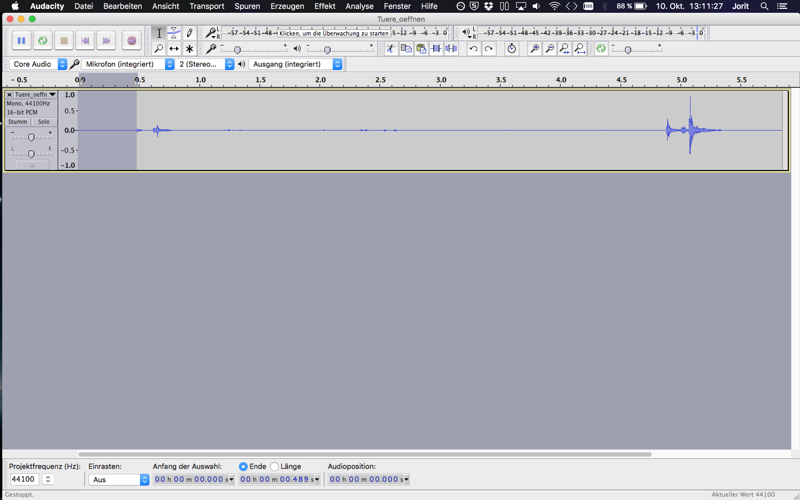
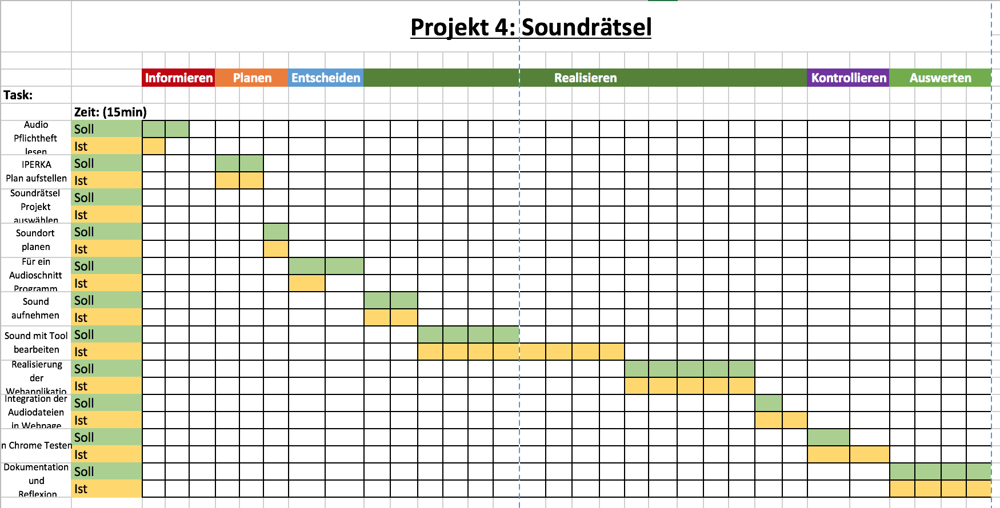

Projekt 4: Soundrätsel
Begründung der Auswahl:
Ich fand die Idee cool Alltags Sounds aufzunehmen und zu bearbeiten.
Die Umsetzung schien nicht allzu aufwändig und weil ich bereits zeitlich etwas knapp war habe ich mich für einen weiteren Pflichtauftrag entschieden. Dennoch habe ich noch nie professionell Sounds geschnitten und ich wollte schon immer einmal Audiacity ausprobieren.
Bezug zur Theorie:
Ich habe die Theorie zum „Audioschnitt mit Audiacity“ überflogen und danach die Soundtracks gekürtzt. Dabei habe ich darauf geachtet, dass das Frequenzspektrum nicht ausschlägt damit der Sound klar ist.
Ausserdem habe ich mein bereits Erlerntes von der Web-Jukebox repetiert.
Reflexion:
Was habe ich gelernt?
Ich habe mich im Umgang mit Audiacity geübt und dabei mein gelerntes aus dem Theorieblock angewendet.
Welche Folgerungen für das Fach kann ich ziehen?
Es ist durchaus wichtig vor und nachdem Geräusch ein paar Sekunden auf zu nehmen, da es das schneiden um einiges erleichtert. Dabei kann man dann auch gleich die unnötigen Geräusche herausfiltern.
Wie bin ich vorgegangen?
Zu erst habe ich das Audio-Pflichtenheft nochmals überflogen und anschliessend einen Zeitplan aufgestellt. Dabei habe ich mich dann auch gleich für ein Projekt entschieden. Zudem musste ich hier mit Sakip, meinem Mitstiften einen Tag planen um die Bürosounds aufzunehmen.
Dann ging es in die Entscheidungsphase, dabei habe ich mich für das Tool Audiacity entschieden, nach dem Input von Herr Garavaldi. Im Geschäft haben wir dann die Sounds aufgenommen und Zuhause mit Audiacity geschnitten.

Danach habe ich das Grundgerüst der Web-Applikation erstellt und anschliessend die Audiotracks integriert. Am Ende habe ich noch etwas am CSS geschliefen und dann die Applikation im Chrome getestet.
Zum Schluss habe ich dann die Dokumentation und Reflexion geschrieben.
Welche Methoden habe ich gewählt?
Ich bin nach der 6-Schritte Methode, IPERKA, vorgegangen.
Dabei handelt es sich um sechs Phasen:

Was hat mir gefallen, was nicht?
Im grossen und Ganzen fand ich das Projekt durchaus spannend, dennoch war ich nicht zu hundert Prozent von Audiacity überzeugt, da es nicht so intuitiv zu verstehen war, wie ich gehofft hatte.
Was half mir beim lernen, was nicht?
Hier hat mir vor allem die Theorie geholfen, jedoch habe ich auch das eine oder andere YouTube Video angeschaut um einige Basiskenntnisse für Audiacity zu erlernen.
Was gelang mir gut?
Vom Ergebnis bin ich nicht so begeistert da das schneiden von Audio Tracks um einiges schwieriger war als ich ursprünglich angenommen habe.
Was kann ich jetzt gut oder besser?
Ich kenne jetzt die absoluten Basics des Audios schneiden, dennoch bin ich noch weit davon entfernt „gut“ zu sein.
Wo hatte ich Schwierigkeiten?
Ich hatte einige Schwierigkeiten mit dem Programm Audiacity, da ich es nicht als äusserst intuitiv bezeichnen würde.
Woran will ich das nächste Mal denken?
Ich werde von Anfang an die Tracks immer Verdoppeln um sozusagen ein „Backup“ zu haben.